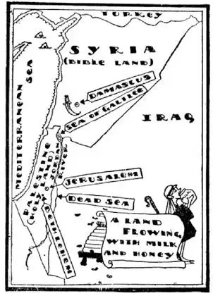
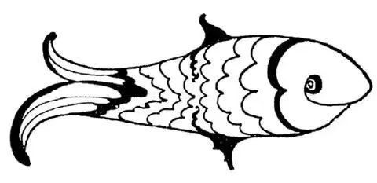
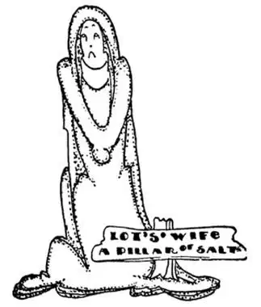

50
A Land Flowing with Milk and Honey
丰饶之国

IN Sunday school I used to hear of Bethlehem and Jerusalem and other places in the Bible, but I had no idea then that there were any such places with people living in them to-day. But there are. We call the land where these places are Bible Land, because so much is told about them in the Bible. Bible Land is at the east end of the Mediterranean Sea. The northern part of Bible Land is called Syria, the southern part is called the Holy Land, or Palestine.
There are a great many cities in Syria and Palestine that were alive when Christ was born and are still living, and there are a great many places that are now dead—nothing left of them but ruins. But there is a city mentioned in the Bible that was a thousand years old when Christ was born and yet is still very much alive. It is the oldest city i. t. w. W. Its name is Damascus.

The main street in Damascus was called “Straight,” because it was not quite as crooked as its other streets. On both sides of Straight Street are shops, for Damascus was once the greatest shopping city in the East; the shops are called bazaars. Some of the bazaars are not big enough to hold a piano. One department store in New York would hold all the bazaars in Damascus many times over. In these bazaars the people of Damascus used to sell only things they made themselves. They sold gold and silver jewelry, rugs, shawls, swords, and silks, and they made everything by hand, for there was no machinery. Now there is machinery to make all these things, but it is not in Damascus. Many of these things are now made by machinery in England and sent to Damascus to be sold. Often a traveler buys something in a Damascus bazaar only to find on it later the tell-tale words “Made in Birmingham.”
A white picture painted on white paper or a red picture on red paper would not show, but in Damascus they used to make a beautiful kind of cloth with designs of the same color as the cloth woven into it by hand. This kind of cloth is called damask, after Damascus. White damask has white designs on it and red damask has red designs, and they do show. You probably have in your own home linen damask table-cloths and napkins or silk coverings on chairs, but the damask that we buy now is made by machinery and does not come from Damascus.
The people in Damascus also used to make a kind of jewelry of iron, with gold designs laid in the iron. This was called Damascene work. Damascene work was much used in decorating swords, and they used to make wonderful swords and knives with edges so sharp they could cut through a bar of iron, so they say. These were called Damascus blades. Soldiers no longer use swords except for show or ornament. Wars are now fought at long distance and soldiers seldom get close enough to use swords.
South of Syria is Palestine, which is also called the Holy Land. On my map there is no room to print the names of even a very few of the places you know. They would run out into the Mediterranean on one side and into the desert on the other, and would be so crowded together that they would cover the little country completely.
You see how small the Holy Land really is. There is a town at the top of the Holy Land with a name like a boy’s—Dan. Down at the bottom of the Holy Land is another town called Beersheba; so people often say “from Dan to Beersheba,” meaning from top to bottom or from one end of something to the other. Between these two towns the distance is only one hundred and fifty miles and the distance across Palestine is only about fifty miles, so that it would be possible now in one day to go in an automobile up and down and across Palestine.
There are two lakes in Palestine; one is in the north and one is in the south, but both are called Seas. The one in the north is called the Sea of Galilee. The one in the south is known as the Dead Sea, for nothing can live in it nor grow around it.
The Sea of Galilee is where Christ walked on the water and where the miraculous number of fish were caught. Many of Christ’s close friends were fishermen, and He asked them to help Him teach others, saying He would make them “fishers of men.” So a club of Galilee fishermen was started and they used a drawing of a fish as the sign of their society, for, strangely enough, the first two letters of the Greek word for fish were Christ’s initials. As in Bible times, they still have sudden storms on the Sea of Galilee and a great many fish are still caught there.

The Christians used a fish as the sign of their society
基督徒用鱼作为社团的标志
Running from the Sea of Galilee into the Dead Sea is a zigzag river called the Jordan. It was in the Jordan River that John the Baptist baptized Christ, and people go from all over the World to see the spot where this took place, and some to be baptized there themselves. There is always a clergyman on hand, ready and waiting, to baptize those who come. Many people fill a bottle with some of the muddy water and take it home to use as “holy water,” or in order to baptize their children with water from the same river in which Christ was baptized. The Jordan is very muddy, because it flows very swiftly and washes the mud from the banks and bottom. It empties its yellow water into the Dead Sea, but the Dead Sea, strange to say, is as blue as the Mediterranean.

Lot’s wife disobeyed the Lord and looked back
罗德的妻子不听从上帝的命令，回头看了一眼
The Dead Sea is in the bottom of a very deep valley, so low that no water can run out of it, as water cannot run uphill. You might think the Dead Sea would fill up and overflow, but it does not, for the air is so hot and dry that the water in the Dead Sea evaporates as fast as it runs into it. But the river is always bringing in salt, and as salt does not evaporate, the Dead Sea, like Great Salt Lake, is getting saltier all the time. It is saltier than Great Salt Lake, it is ten times saltier than the ocean, and of course no one Could drown in it. People don’t bathe in the Dead Sea, however, because the water is so salty that if it splashes into one’s eyes or touches any scratches or broken skin it stings like iodine put on a cut. There is so much salt around the Dead Sea that nothing will grow there, and even salt-water fish cannot live in the water. We think that the two most wicked cities in the World, Sodom and Gomorrah, were by the Dead Sea. The Bible says they were so wicked that the Lord destroyed them. There is nothing now left of them but desert, with a crust of salt over all. You remember, the Lord told Lot to take his family and flee from Sodom before he destroyed it, and ordered him and his family not to look back. Lot’s wife disobeyed and she was turned to a pillar of salt. And a guide will point out a mound of salt that he says is Lot’s wife!
【中文阅读】
我小时候在主日学校常听到“伯利恒”、“耶路撒冷”以及其他一些在《圣经》里出现的地名。但那时我并不知道世界上真有这些地方，而且今天还有人居住在那里，但是，确实如此。我们现在把这些地方称为“《圣经》之地”，是因为在《圣经》里有很多关于这些地方的故事。“《圣经》之地”位于地中海东侧，其北部叫做叙利亚，南部叫做“圣地”或巴勒斯坦。
在叙利亚和巴勒斯坦有许多城市，在基督诞生之时充满了活力，现在这些城市仍充满活力；也有许多地方，现在死气沉沉了——只剩下一片废墟。但是，有一座在《圣经》里提到的城市，到基督诞生时，它已经有一千年的历史了，然而，现在仍然生机勃勃，它是世界上最古老的城市，名字叫大马士革。
大马士革的主要街道被称作“直街”，因为它不像其他街道那样弯曲。直街两侧的商店铺面鳞次栉比，因为大马士革曾经是东方最大的购物城市，这些商店叫做“街市”，有些街市很小，连一架钢琴都放不进去。纽约市的一家百货商店是大马士革所有街市的好几倍大。在这些街市里，大马士革人只卖他们自己做的东西。他们卖金银首饰、小地毯、披巾、刀剑，还有丝绸衣服，每件东西都是手工制作，因为那个时候还没有机器。现在机器可以生产出所有这些东西，但不是在大马士革生产的。现在这些东西中的许多都是在英国用机器生产的，然后再运到大马士革出售。游客常常在大马士革街市上买一件纪念品，后来却发现上面有“伯明翰制造”的标志。
如果在白纸上用白色颜料画画，或者在红纸上用红色颜料画画，上面的画就显现不出来。但是在大马士革，人们过去生产一种精美的布料，上面的图案是手工织入的，和布的颜色一样。这种布就是以产地“大马士革”命名的，叫做“大马士革花缎”，简称“织花布”。白色的织花布上有白色的图案，红色的有红色的图案，所有图案清晰可见。很可能你家里就有亚麻织花桌布和餐巾、或丝质织花椅套，但是，我们现在所买的织花布都是机器生产的，产地也不是 大马士革。
大马士革人过去还生产一种铁质的饰品，上面镶有金色的图案，这种饰品叫做“大马士革工艺品”，主要用来装饰剑。大马士革人过去打造出精美刀剑，非常锋利，据说能削断铁块。这些剑被称作“大马士革剑”。除非为了炫耀或装饰，士兵们不再使用剑了。现在的战争都是远距离作战，士兵们很难有机会可以近身用剑搏斗。
叙利亚的南边是巴勒斯坦，巴勒斯坦也被称为“圣地”。在我的地图上，已经没有空间印上哪怕是很少几个你所熟悉的地名，如果印上地名，这些地名就会一边冲进地中海，另一端伸进沙漠，整个地图密密麻麻布满文字，会把这个小国家完全遮盖。
你可以看出这“圣地”是多么小了吧。“圣地”的顶端有一个小镇，镇的名字像一个男孩子的名字——但；“圣地”的底端还有一个城镇，名叫别示巴。于是人们常常说“从但到别示巴”，意思就是“从上到下”或“从一端到另一端”。这两个城镇相距仅150英里，巴勒斯坦城东西相距大约只有50英里，所以，现在如果乘汽车，一天之内就能够从北到南，从东到西，走遍整个巴勒斯坦。
巴勒斯坦有两个湖，一个在北部，另一个在南部，但是两个都称作“海”。北部的叫加利利海，南部的叫死海，因为死海中没有生物可以生存，在死海的周围也不长任何生物。
加利利海是基督水上行走过的地方，这里盛产鱼。基督的好朋友中很多都是渔夫，基督请他们帮他布道，并说他要使他们“得人如得鱼”。于是加利利海的渔夫组成一个社团，用一幅“鱼”的画作为社团的标志。奇怪的是，希腊语“鱼”的单词的头两个字母是基督姓名的首字母。就像《圣经》时代一样，现在加利利海仍然会突然发生暴风雨，那里的渔夫仍然能捕捉到很多很多的鱼。
有一条蜿蜒曲折的河从加利利海流进死海，这条河叫做约旦河。就是在约旦河，施洗者约翰给耶稣施洗。人们从世界各地来到这里，参观耶稣受洗的地方，有些人自己来这里受洗。总有一位牧师在近旁，随时准备着为前来的人施洗。很多人还用瓶子装上一些约旦河浑浊的河水，带回家，当做“圣水”使用，或者准备用耶稣受洗的那条河的河水给自己的孩子施洗。约旦河水非常浑浊，这是因为约旦河流速太快，把两岸和河底的泥沙冲走了。约旦河浑浊的水流进死海，但说来也怪，死海和地中海一样蓝。
死海位于一个很深的山谷底部，由于地势很低所以没有水能流出死海，因为水是不会朝上坡流的。你也许会认为，死海总有一天会装满水，然后漫出来， 但是不会，因为这儿的空气炎热干燥，死海里的水蒸发的速度和水流进的速度一样快。但是，含有盐分的河水不断流入，而盐是不会蒸发的，所以，死海，就像大盐湖一样，一直以来不断在变得越来越咸，比海水要咸十倍，所以理所当然没有人会淹死在死海里。不过，人们不在死海里游泳，因为水太咸了，如果溅到眼睛里、或者触到擦伤或破损的皮肤，会产生刺痛，就像在伤口处擦了碘酒的感觉。由于死海里盐分过高，那里什么生物也不能生长，甚至连海鱼都不能在水里存活。我们认为，世界上两个最邪恶的城，所多玛和蛾摩拉都位于死海边。《圣经》说，这两座城市太邪恶了，所以上帝将它们毁灭了。现在这两座城市什么也没有留下，只有沙漠，上面还覆盖着一层盐。你记得吗，上帝在毁灭所多玛之前，告诉罗德带着自己的家人逃离所多玛，还要求他和他的家人不可以回头看。罗德的妻子不听从上帝的命令，回头看了一眼，立刻被变成了一根盐柱。旅游者到了那里，导游会指着一堆盐说，“这就是罗德的妻子。”